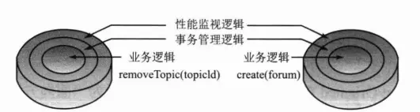
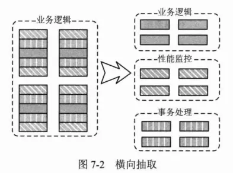
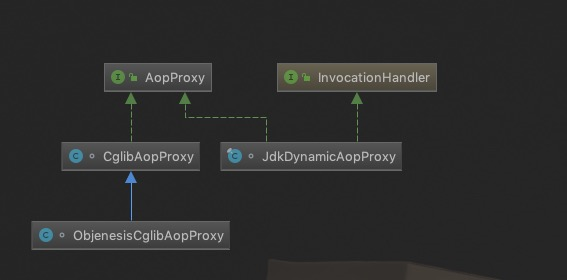
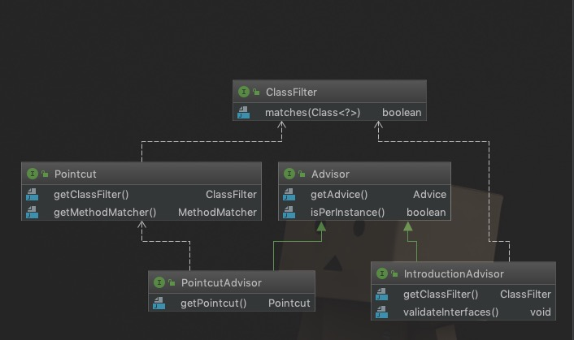
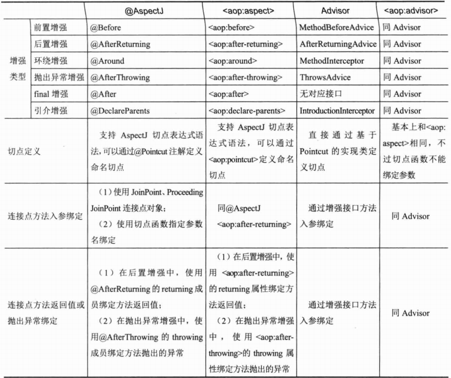
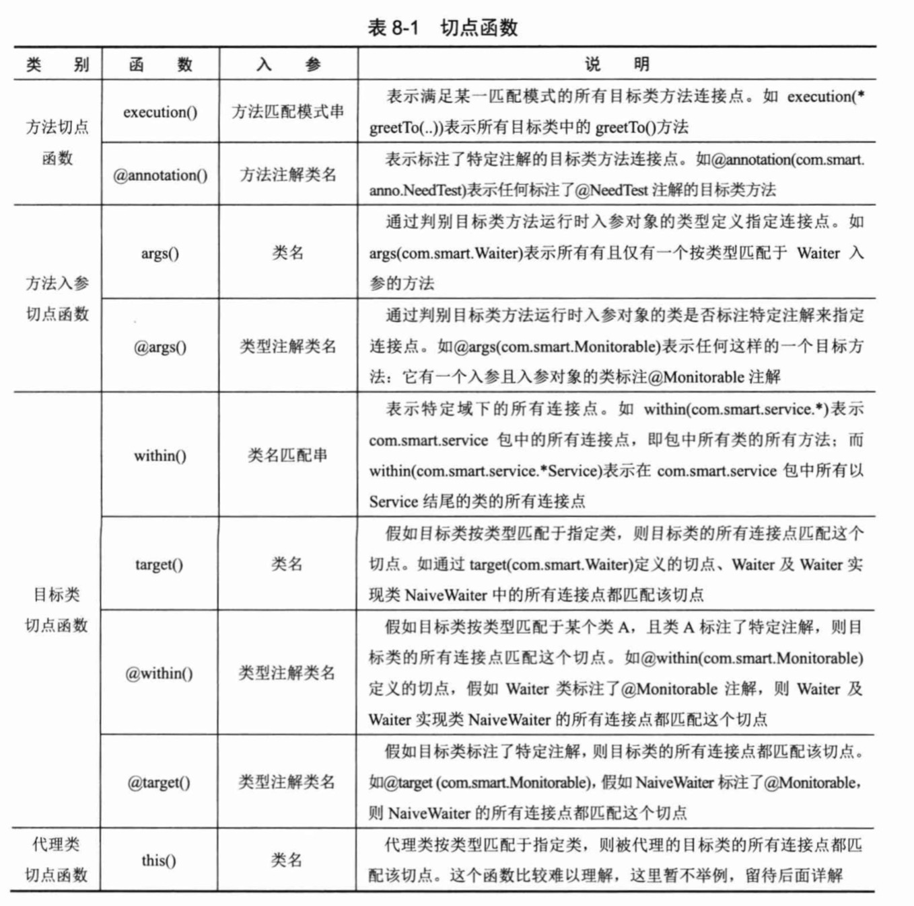

将重复性的逻辑代码横切出来其实很容易(我们简单可认为就是封装成一个类就好了)，
但我们要将这些被我们横切出来的逻辑代码融合到业务逻辑中，来完成和之前(没抽取前)一样的功能！这就是AOP首要解决的问题了！
这样一来，我们就在写业务时只关心业务代码，而不用关心与业务无关的代码


Spring Aop 原理
Spring AOP 使用纯Java实现，它不需要专门的编译过程，也不需要特殊的类装载器，
它在运行期通过代理方式向目标类织入增强代码。在Spring中可以无缝地将 Spring AOP、IoC 和 AspectJ 整合在一起。
Spring AOP构建在动态代理基础之上，因此，Spring对AOP的支持局限于方法拦截。

动态代理
- JDK 动态代理
Spring AOP默认是使用JDK动态代理，如果代理的类没有接口则会使用CGLib代理。 - cglib动态代理
CGLib代理其生成的动态代理对象是目标类的子类
** JDK动态代理 和 cglib代理我们应该使用哪个？1
2
3
4 如果是单例的我们最好使用 CGLib代理，如果是多例的我们最好使用JDK代理
原因: JDK在创建代理对象时的性能要高于 CGLib代理，而生成代理对象的运行性能却比CGLib的低。
如果是单例的代理，推荐使用CGLib
AOP 的实现
- Spring AOP
而Spring借鉴了AspectJ很多非常有用的做法，融合了AspectJ实现AOP的功能。但Spring AOP本质上底层还是动态代理，所以Spring AOP是不需要有专门的编辑器的 - AspectJ
AspectJ是语言级别的AOP实现，扩展了Java语言，定义了AOP语法，能够在编译期提供横切代码的织入，所以它有专门的编译器用来生成遵守Java字节码规范的Class文件。
AOP 术语
连接点(JoinPoint)
能够被拦截的地方: Spring AOP是基于动态代理的，所以是方法拦截的。每个成员方法都可以称之为连接点(JoinPoint)切点(PointCut)
具体定位的连接点: 上面也说了，每个方法都可以称之为连接点(JoinPoint)，我们具体定位到某一个方法就成为切点(PointCut)。增强(Advice)
表示添加到切点的一段逻辑代码，并定位连接点(JoinPoint)的方位信息。
Spring AOP提供了5种Advice类型给我们：前置(Before)、后置(After)、返回(Return)、异常(Exception)、环绕(Around)给我们使用！切面(Aspect)
切面由切点(PointCut)和增强(Advice)组成，它既包括了横切逻辑的定义、也包括了连接点(JoinPoint)的定义。织入(Weaving)
将增强(Advice)添加到目标类的具体连接点(JoinPoint)上的过程。
这些概念乍一看可能有点蒙， 当AOP 用的多了以后，自然而然就理解了
其中关键是: 切点(PointCut)定位的方法[连接点(JoinPoint)] 会得到 增强(Advice) 代码的织入(Weaving)
切面类型

- 普通切面(Pointcut)
- 切点切面(PointcutAdvice)
- 引介切面(IntroductionAdvisor)

基于注解的 AOP 编程

通配符
在定义匹配表达式时，通配符几乎随处可见，如*、.. 、+ ，它们的含义如下：
..匹配方法定义中的任意数量的参数，此外还匹配类定义中的任意数量包1
2
3
4//任意返回值，任意名称，任意参数的公共方法
execution(public * *(..))
//匹配com.mjm.dao包及其子包中所有类中的所有方法
within(com.mjm.dao..*)+匹配给定类的任意子类1
2//匹配实现了DaoUser接口的所有子类的方法
within(com.mjm.dao.DaoUser+)*匹配任意数量字符1
2
3
4//匹配com.mjm.service包及其子包中所有类的所有方法
within(com.mjm.service..*)
//匹配以set开头，参数为int类型，任意返回值的方法
execution(* set*(int))类型签名表达式
为了方便类型（如接口、类名、包名）过滤方法，Spring AOP 提供了within关键字。
语法格式如下：1
2
3
4
5
6
7
8
9
10
11
12
13
14
15// type name 则使用包名或者类名替换
within(<type name>)
// example
//匹配com.mjm.dao包及其子包中所有类中的所有方法
//匹配UserDaoImpl类中所有方法
//匹配UserDaoImpl类及其子类中所有方法
//匹配所有实现UserDao接口的类的所有的方法
方法签名表达式
对方发签名进行过滤， 对于给定的作用域、返回值类型、完全限定类名以及参数匹配的方法将会应用切点函数指定的通知
execution
语法格式如下：1
2
3
4
5
6
7
8
9
10
11
12
13
14
15
16
17
18//scope ：方法作用域，如public,private,protect
//returnt-type：方法返回值类型
//fully-qualified-class-name：方法所在类的完全限定名称
//parameters 方法参数
execution(<scope> <return-type> <fully-qualified-class-name>.*(parameters))
// example
//匹配UserDaoImpl类中的所有方法
@Pointcut("execution(* com.mjm.dao.UserDaoImpl.*(..))")
//匹配UserDaoImpl类中的所有公共的方法
@Pointcut("execution(public * com.mjm.dao.UserDaoImpl.*(..))")
//匹配UserDaoImpl类中的所有公共方法并且返回值为int类型
@Pointcut("execution(public int com.mjm.dao.UserDaoImpl.*(..))")
//匹配UserDaoImpl类中第一个参数为int类型的所有公共的方法
@Pointcut("execution(public * com.mjm.dao.UserDaoImpl.*(int , ..))")
其他指示符
1 | // target: 用于匹配当前目标对象类型的执行方法； |
5种增强类型
| 注解 | 含义ßß |
|---|---|
| @Before | 前置通知，在连接点方法前调用 |
| @Around | 环绕通知，它将覆盖原有方法，但是允许你通过反射调用原有方法，后面会讲 |
| @After | 后置通知，在连接点方法后调用 |
| @AfterReturning | 返回通知，在连接点方法执行并正常返回后调用，要求连接点方法在执行过程中没有发生异常 |
| @AfterThrowing | 异常通知，当连接点方法异常时调用 |